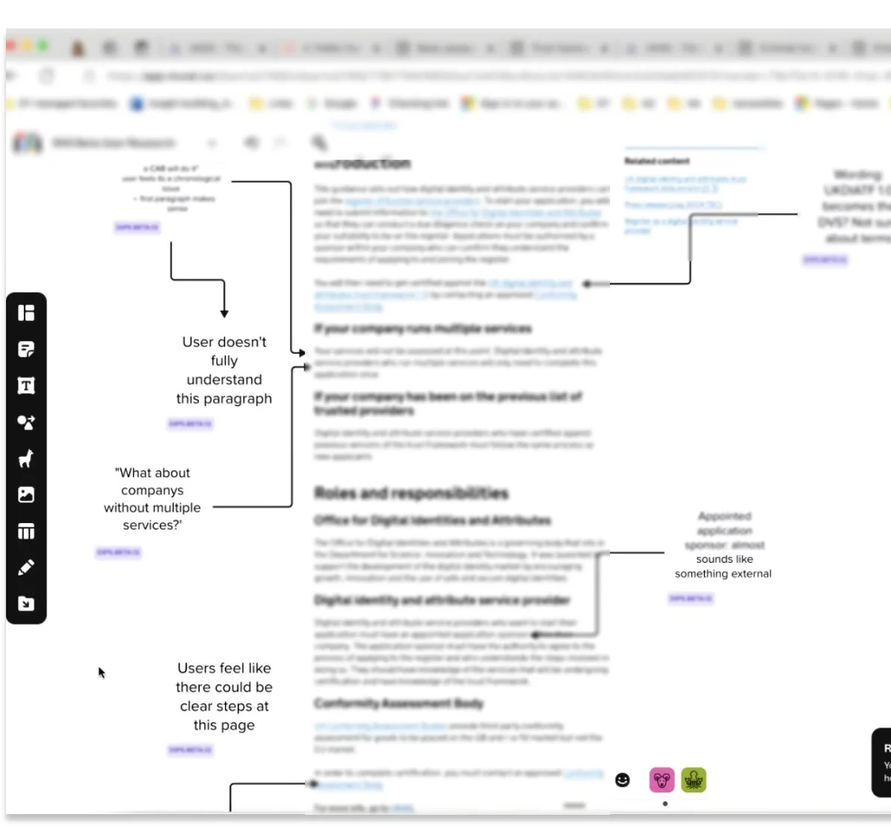
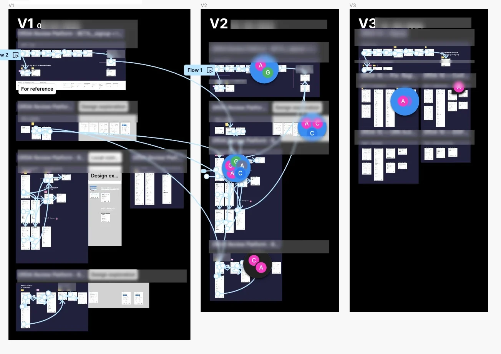
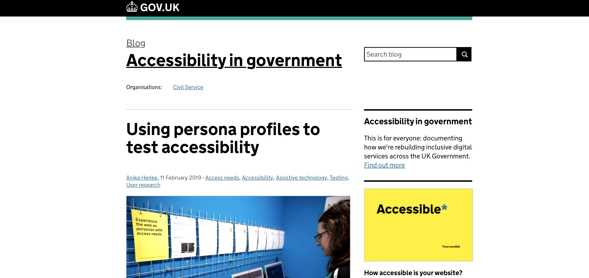

Digital Verification Services Register
Turning legislation into a four-platform regulatory service: independent certification, provider onboarding, back-office audit and the public register.
Strategic context and legislative challenge
The UK Digital Identity and Attributes Trust Framework sets the rules by which private companies may be certified to provide digital identity and attribute verification services. It is dense and written for legal and policy audiences. Before, the register was a manual, document-driven process: certificates arrived by email, evidence was assessed in spreadsheets and the public record of who was registered lived outside any system.
The goal was to make the framework operable. That meant reading the legislation as a set of decisions, obligations and evidence requirements, then designing the service that carries them out. Every screen in the service traces back to a clause someone has to comply with.
End-to-end service architecture
The service is one process running across four platforms. Designing them as a single system kept status, terminology and evidence consistent from submission through to public listing.
The four platforms
CAB portal
Accredited auditors lodge certificates of conformity and trigger pre-populated application links for providers.
Provider portal
A task-list submission route with inline guidance, replacing the 40-page guidance document providers worked from.
DSIT operator portal
A high-density review tool for auditing certificates, working decision trees and recording determinations.
Public register
The live public directory, stating exactly what is registered and what registration does not imply.
The join between platforms
One status model runs end to end. What an operator records as a determination is what the provider sees in their tracker and what the public register publishes — with no manual re-entry between the four surfaces.
How the four platforms connect, step by step
Research, co-design and facilitation
Research ran continuously from Alpha into Live, with four participant groups. I led the research alongside design, which meant findings landed directly in the next iteration rather than in a report.


Research outputs by phase
Discovery — understanding the manual process
Formulated initial concepts to address pain points in the manual workflow, establishing a core framework of assumptions and hypotheses alongside a clear roadmap to test them in the next phase.
- 40+
- Research sessions using mixed methods: 1:1 interviews, focus groups and site visits observing operators day to day
- 9
- As-is journeys mapping how providers, CABs and operators worked before the register existed
- 5
- Synthesis sessions after each research round, translating patterns into user needs in the GDS structure
Alpha — defining the service and its users
Executed rapid prototyping alongside end-to-end service workshops to develop and test core propositions. Conducted bi-weekly alignment sessions and "show and tells" to ensure policy, legal and delivery teams shared a unified understanding of the problem. Defined the implementation plan for the subsequent phase.
- 14
- GDS Service Standards evidenced as met
- 100+
- User needs catalogued and aligned to service scope across user groups
- 12
- Personas covering every user type interacting with the service, civil servants included
Beta — building and testing the platforms
Concluded testing for each platform by generating dedicated quality assurance reports, ensuring functional and usability findings remained traceable per individual service rather than pooled across the broader ecosystem.
- 3
- Platform services fully functional and tested
- 47
- User flows designed across the three services
- 7
- Personas refined against how users actually behaved in testing
- 3
- Quality Assurance reports completed
What changed as a result
Providers were not failing at form filling, they were failing to predict what government would accept. Every iteration moved effort earlier — declaring scope before uploading evidence — cutting the return-for-clarification loop that had dominated the manual process.
Human factors, accessibility and content
Errors in this domain carry serious compliance risks, not just user frustration. To prevent them, the service was built on the GOV.UK Design System.
The service secured a minimum of 86% on external accessibility audits.

Testing with GOV.UK persona profiles
I used the access-needs persona profiles published by GDS. Each profile is a pre-configured machine account carrying one persona's real assistive technology set-up, so a designer signs in as that persona and completes the journey under their conditions. I walked the provider submission, the operator review and the public register as each profile and every issue was logged against the persona who hit it, which made the fix specific rather than generic.
Read how GDS built the persona profiles (opens in a new tab)
Key outcomes and results
Statutory framework operationalised
GDS assessments passed first time
Interconnected platforms as one end-to-end service
Minimum score on external accessibility audits
The register moved from a manual, email-and-spreadsheet process to a live digital service, passing both GDS assessments first time with the service blueprint and research trail cited as the basis of the panel's confidence. Operators were ready at launch, reducing dependence on a small number of specialists. The work was presented to the wider government design community at Services Week 2024.